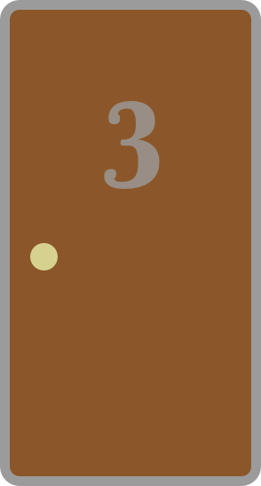
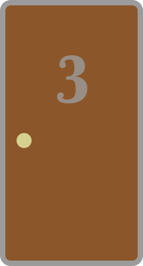
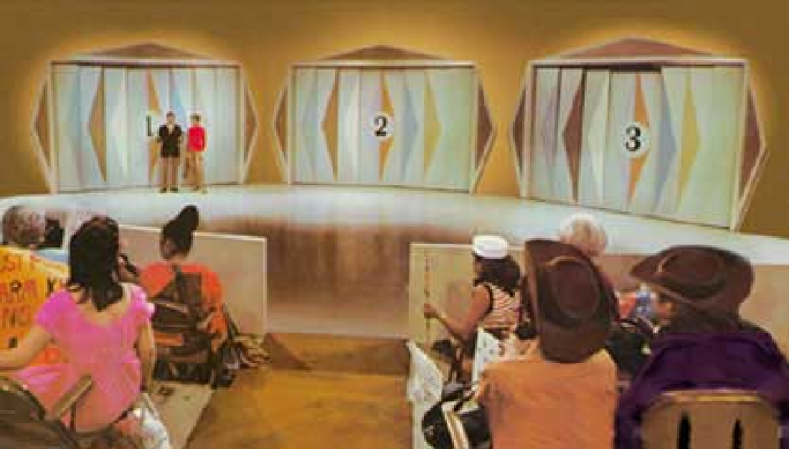

The Monty Hall Problem
An interactive look at the classic logic puzzle
Welcome to the show, contestant! You have the chance to win a new car - but only if you can guess which door it's behind.
pick a door
 

Introduction
You've just experienced the Monty Hall problem - is it better to switch your guess after one door has been opened? Does that decision matter at all? Play a few times to get a good sense of the game.
This logic puzzle has gained some notoriety in pop culture; you may have seen it in this MIT classroom scene from the 2008 MIT-students-vs-blackjack movie 21, or maybe this Brooklyn Nine-Nine montage from Season 4, Episode 8. YouTube has several great explainers, like this one from Numberphile or this one from Vsauce. Although this problem has definitely been thoroughly covered, consider this excerpt from the Monty Hall Problem wikipedia page:
In her book The Power of Logical Thinking, vos Savant (1996, p. 15) quotes cognitive psychologist Massimo Piattelli-Palmarini as saying that "no other statistical puzzle comes so close to fooling all the people all the time", and "even Nobel physicists systematically give the wrong answer, and that they insist on it, and they are ready to berate in print those who propose the right answer".
If you've never explored the Monty Hall problem, you're in for a treat. Hopefully once you've interacted with this page, this potentially confounding puzzle will make sense!
Discussion
It feels like switching to another unknown door is pointless, since it's still unknonwn. If you decide to switch and your original guess was correct, it feels like you had it and you gave it away. (This is called the Endowment effect; overvaluing the already 'owned' or chosen) Perhaps it's more difficult to handle the consequences of direct action (like switching and losing) as opposed to inaction (like staying and losing).
Since the first choice was arbitrarily made as a true guess, why would switching be any better? A 1995 research article by Thad A. Brown found that only 13% of his 228 participants chose to switch their guess when given the opportunity.
Once one door is opened and now there are two unopened doors remaining, it feels like it's a 50-50 chance - that's what it would be if you started the game at that phase, right? The problem with this approach is that it discards some valuable information concerning the original probability of the selection. When we made the selection the situation was different - and we can use this information to our advantage.
The name comes from game show host Monty Hall, who hosted various television gameshows in the 1960s and 70s, most notably Let's Make a Deal (which now has a Wayne Brady reboot). There are full episodes available on YouTube, which contain the games that inspired this problem.
Simulation
Let's look at the problem over a longer time-period. We'll use two contestants that start with the same three doors and the same initial guess. However, the purple contestant will switch every game and the orange contestant will stay with the original choice. Over a few hundred games, maybe we'll be able to see a trend emerging on the chart below. There will be 200 games simulated, but the first five will go slowly so the contestants' choices can be seen easily.
Analysis
As you can see over many trials, there is a long-term advantage to the contestant that chooses to switch every game...but why? Let's looks a little closer.
When the original guess is correct, the host can choose either door to open and reveal a goat. But when the original guess is incorrect, that host must be more selective - he can't open the winning door. So that leaves just one other door to open. This act of selection by the host is part of the key to understanding why switching leads to more wins - it means if the original guess was wrong, the winning door will always be available to be switched to.
Consider the following case:
The contestant has selected door two, which we know contains a goat. Since the host can't open the selected door (yet) and also can't reveal the car behind door one (since that would ruin the game), that means that door three will be opened to reveal the goat. In this game, the contestant can only win by switching.
Now imagine the contestant chose door three instead of door two - what changes?
The host will once again be forced to reveal the other goat (this time behind door two), and the switching contestant will win. This uncovers a critical insight - any contestant that guesses wrong initially will win by switching. Now we can translate that sentence into numbers since we know the original probability: with one car and two goats, there's a two-out-of-three chance the original guess was wrong.
After the selection is made, let's consider the possible outcomes:
- Switch and win
- Switch and lose
- Stay and win
- Stay and lose
And if we put them in a table, it looks like this. By clicking Show Percentages the text will be translated to the actual chances of that occurring in the game.
The horizontal "win" row shows the chances we get from switching or staying. This table confirms what our simulation already revealed - switching your guess will win two-thirds of the time!
Switch Win % = 1 - (the chance the original guess was correct)
Switch Win % = 1 - (1/3) = 2/3
The formula is a little bit more complicated if we want to cover the general case,
but for the traditional assumptions of the Monty Hall problem, this simplified version works great.
The full formula looks like this:
Switch Win % = (GuessWrong)(SwitchRighGuessWrong)+(GuessRight)(SwitchRightGuessRight)
Since there is only one door remaining, SwitchRightGuessWrong is 1 (meaning if we guess wrong initially, the switch always win the car) and SwitchRightGuessRight is 0 (meaning if we guess right initially, the switch will never win the car). If we plug that in and simplify it, we get the following:
Switch Win % = (GuessIsWrong)(1) + (GuessIsRight)(0)
Switch Win % = (GuessIsWrong) = 1 - GuessIsRight
The full formula helps when exploring more complicated iterations of the problem, for example with multiple cars or multiple doors available to switch to.
Exploration
We've explained one frame of reference for thinking about the Monty Hall problem, but looking at it from another angle may provide more clarity. By exaggerating the problem dramatically, we can see the same principles in a clearer light.
Let's play again with one car, but instead of three doors, now there are 100.
pick a door
This example is admittedly ridiculous - but in this case switching is an easier choice to make because there is so much new informaiton. It's key that there is only one door remaining available to select through switching. Since there are only two options on the table, we can easily calculate the winning chances:
Switch Win % = 1 - (the chance the original guess was correct)
Switch Win % = 1 - (1/100) = 99/100
This means there's a 99% chance you'll win if you switch - it's just easier to see the advantage in this example because there are so many doors.
Conclusion
The results are in and the math shows that switching maximizes a contestant's winning chances. It still takes a bit of thought to wrap your head around this one - feel free to play around with the tools above to sharpen your understanding. There are still things to explore: What if there is more than one car? Or more than one door available to switch to? How will this affect our chances? See if you can puzzle it out for yourself.
Written, designed, and built by Travis Shafer